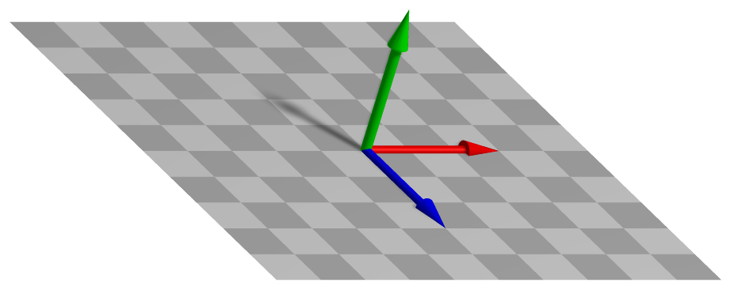

ObjectGround
A ground object behaving like a rigid body, but having no degrees of freedom. Used to attach body-connectors without an action. For examples see spring dampers and joints.


Simpler: mbs.CreateGround adds this item, with what it needs, in one call.
Interface
Body markers that can be placed on it: MarkerBodyMass, MarkerBodyPosition, MarkerBodyRigid
Parameters
The parameters of the item; in a dictionary, its type is ‘Ground’:
name |
type |
size |
default |
description |
|---|---|---|---|---|
name |
String |
‘’ |
objects’s unique name |
|
referencePosition |
Vector3D |
3 |
None (zero) |
(symbol: \(\pRefG\)) reference point = reference position for ground object; local position is added on top of reference position for a ground object; the translation of referenceHT |
referenceRotation |
Matrix3D |
9 |
None (unit matrix) |
(symbol: \(\LU{0b}{\Rot} \in \Rcal^{3 \times 3}\)) the constant ground rotation matrix, which transforms body-fixed (b) to global (0) coordinates; the rotation of referenceHT |
referenceHT |
HomogeneousTransformation |
None (identity) |
(symbol: \(\LU{0b}{\Hm} \in \Rcal^{4 \times 4}\)) the reference frame of the ground as homogeneous transformation, composed of referenceRotation and referencePosition: a 4x4 matrix, its 16 values row by row or an exu.HT; given together with one of them, both must agree |
|
visualization |
VObjectGround |
parameters for visualization of item |
Visualization parameters
The parameters of VObjectGround, given as visualization:
name |
type |
size |
default |
description |
|---|---|---|---|---|
show |
Bool |
True |
set true, if item is shown in visualization and false if it is not shown |
|
graphicsDataUserFunction |
ObjectGroundGraphicsDataUserFunction |
0 |
A Python function which returns a bodyGraphicsData object, which is a list of graphics data in a dictionary computed by the user function |
|
graphicsData |
BodyGraphicsData |
Structure contains data for body visualization; data is defined in special list / dictionary structure |
Drawing
Drawn as all bodies; its graphicsData, at its reference position, and what its graphicsDataUserFunction returns.
Output variables
Available as OutputVariableType in sensors, Get...Output() and other functions:
output variable |
symbol |
description |
|---|---|---|
Position |
\(\LU{0}{\pv} = \pRefG + \LU{0b}{\Rot} \pLocB\) |
global position vector of translated local position |
Displacement |
\(\Null\) |
global displacement vector of local position |
Velocity |
\(\Null\) |
global velocity vector of local position |
AngularVelocity |
\(\Null\) |
angular velocity of body |
RotationMatrix |
\(\LU{0b}{\Rot}\) |
rotation matrix in vector form (stored in row-major order) |
Detailed description
Equations
ObjectGround has no coordinates and no equations: it is a fixed body to which joints, connectors
and markers are attached. Forces and torques on it have no effect. Its reference position and
rotation may be changed over time, which moves what is attached to it; its velocity is still zero at
every instant, so such a prescribed motion is to be used with care.
Kinematics
A local position \(\pLocB\) is at the global point
with the reference point \(\pRefG\) = referencePosition and the rotation \(\LU{0b}{\Rot}\) =
referenceRotation. The two are one frame, which referenceHT gives at once as homogeneous
transformation; a parameter left None is not given, and the item stores the frame.
Marker interfaces
All Jacobians are empty: a marker on the ground gives its position and orientation to a joint or connector, and nothing acts back.
Userfunction: graphicsDataUserFunction(mbs, itemNumber)
A user function, which is called by the visualization thread in order to draw user-defined objects.
The function can be used to generate any BodyGraphicsData, see Section GraphicsData.
Use exudyn.graphics functions, see Section Module: graphics, to create more complicated objects.
Note that graphicsDataUserFunction needs to copy lots of data and is therefore
inefficient and only designed to enable simpler tests, but not large scale problems.
arguments / return |
type or size |
description |
|---|---|---|
|
MainSystem |
provides reference to mbs, which can be used in user function to access all data of the object |
|
Index |
integer number of the object in mbs, allowing easy access |
return value |
BodyGraphicsData |
list of |
Example:
import exudyn as exu
from math import sin, cos, pi
from exudyn.utilities import * #includes itemInterface and rigidBodyUtilities
import exudyn.graphics as graphics
SC = exu.SystemContainer()
mbs = SC.AddSystem()
#create simple system:
mbs.AddNode(NodePoint())
body = mbs.AddObject(MassPoint(mass=1, nodeNumber=0))
#user function for moving graphics:
def UFgraphics(mbs, objectNum):
t = mbs.systemData.GetTime(exu.ConfigurationType.Visualization) #get time if needed
#draw moving sphere on ground
graphics1=graphics.Sphere(point=[sin(t*2*pi), cos(t*2*pi), 0],
radius=0.1, color=graphics.color.red, nTiles=32)
return [graphics1]
#add object with graphics user function
ground = mbs.AddObject(ObjectGround(visualization=VObjectGround(graphicsDataUserFunction=UFgraphics)))
mbs.Assemble()
sims=exu.SimulationSettings()
sims.timeIntegration.numberOfSteps = 10000000 #many steps to see graphics
SC.renderer.Start() #perform zoom all (press 'a' several times) after startup to see the sphere
mbs.SolveDynamic(sims)
SC.renderer.Stop()
Mini example
#a ground object at a reference position: a fixed point for markers and connectors
oFixed = mbs.AddObject(ObjectGround(referencePosition=[0,2,0]))
mFixed = mbs.AddMarker(MarkerBodyPosition(bodyNumber=oFixed, localPosition=[0,0,0]))
node = mbs.AddNode(NodePoint(referenceCoordinates=[0,1,0]))
mbs.AddObject(ObjectMassPoint(nodeNumber=node, mass=1))
mNode = mbs.AddMarker(MarkerNodePosition(nodeNumber=node))
mbs.AddObject(ObjectConnectorCartesianSpringDamper(markerNumbers=[mFixed, mNode], stiffness=[100,100,100],
offset=[0,-1,0]))
mbs.AddLoad(LoadForceVector(markerNumber=mNode, loadVector=[0,-9.81,0]))
mbs.Assemble()
mbs.SolveStatic()
#the mass hangs 1 below the ground point, lowered by m*g/k
exu.sys['testResult'] = mbs.GetNodeOutput(node, exu.OutputVariableType.Displacement)[1] #-0.0981
Examples (Ex) and TestModels (TM) that show this item, with weblink to github: basicTutorial2024.py (Ex), tutorialSpringDamperCreate.py (Ex), tutorialRigidBody.py (Ex), tutorialRigidBodyCreate.py (Ex)